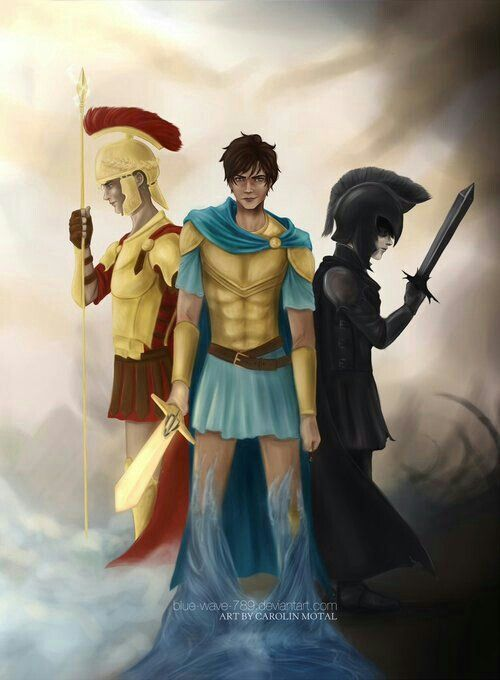
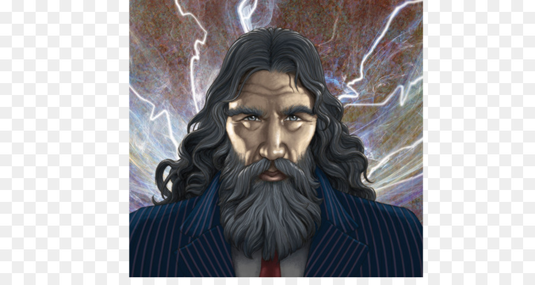

Os Deuses do Olimpo.
Suas origens e definições segundo Rick Riordan.
Essa matéria trata da vista dos Deuses pelo livro :"O herói perdido", da série: "Os heróis do Olimpo ", do autor Rick Riordan.
Nos surpreendemos com a revelação de Jason, mais um filho de Zeus, e sue parentesco com Thalia, também filha de Zeus, sendo assim o Pacto dos três grandes foi quebrado, gerando:
- Thalia Grace, Flha de Zeus
- Perseu jackson, Flho de Poseidon
- Nico 'Di angelo', Flho de Hades
- Bianca 'Di angelo', Flha de Hades
- Jason Grace, Flho de Zeus

Com o pacto quebrado, podemos esperar grandes guerras e confusão envolvendo os três grandes...

Contato do escritor do blog:
Voltar ao Topo